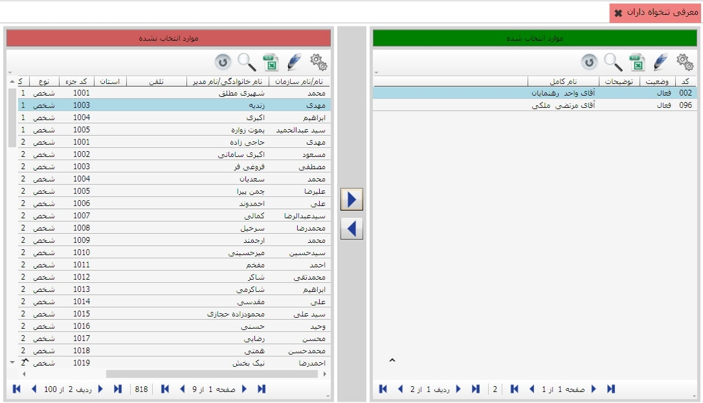

برای معرفی تنخواه داران از منوی اطلاعات پایه و عوامل گردش خزانه گزینه «معرفی تنخواه داران» را انتخاب نمایید.

در شکل بالا لیست اشخاص تعریف شده در سیستم در سمت چپ و لیست تنخواه داران در سمت راست نمایش داده می شود. برای معرفی تنخواه دار جدید نام شخص مورد نظر را از لیست سایر اشخاص انتخاب کنید و با استفاده از گزینه
 آن را به لیست تنخواه داران اضافه نمایید. همچنین می توانید با انتخاب نام یک تنخواه دار از سمت راست، توسط گزینه
آن را به لیست تنخواه داران اضافه نمایید. همچنین می توانید با انتخاب نام یک تنخواه دار از سمت راست، توسط گزینه
 نام آن شخص را از لیست تنخواه داران خارج کنید.
نام آن شخص را از لیست تنخواه داران خارج کنید.